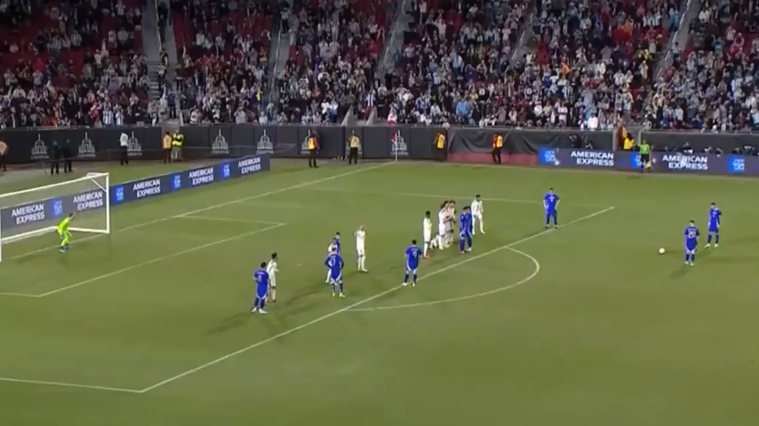

|  |
| Bu sezon Benfica formasıyla 39 maça çıkan ve söz konusu maçlarda 15 gol 11 asistle toplamda 26 gole doğrudan etki eden tecrübeli futbolcu, başarılı formunu milli takımda da sürdürüyor. Geçtiğimiz yıl ülkesiyle Dünya Kupası kazanmanın sevincini yaşayan Angel Di Maria, geçen yıllara rağmen futbolseverlere klas goller seyrettirmeye devam ediyor. Yıldız oyuncu, dün gece Arjantin ile Kosta Rika arasında oynanan ve Arjantin'in 3-1'lik galibiyetiyle sonuçlanan karşılaşmada serbest vuruştan harika bir gol attı. İşte o anlar... |